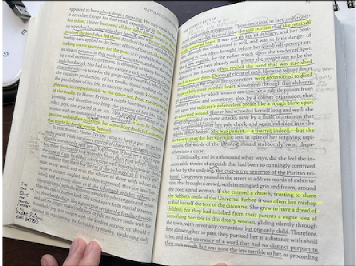
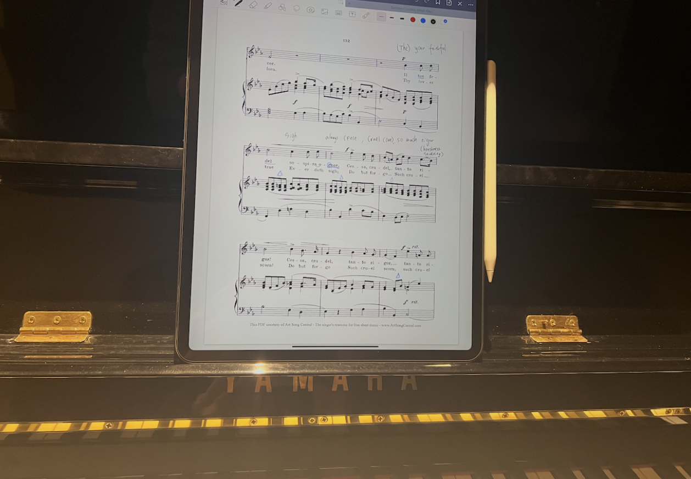

Hobbies
When I have free time, I usually turn to music and reading, which have become steady parts of my life.
Music
I train as a tenor and enjoy singing for the simple, direct experience of using my voice as the instrument. A
lot of the appeal is in the daily practice—working on breath, tone, and phrasing, and slowly feeling things click
over time. Singing is also an expressive process that connects both the song writer’s experience and my own
interpretation.
I especially enjoy art songs and lieder. My favorite pieces include Sebben, crudele,
Heidenroselin, and Cooing And Wooing.
Reading
I enjoy reading across both literature and philosophy. Both expose me to experiences that I will never encounter
in my life time. Literature lets me inhabit lives far from my own,
At the same time, philosophy introduces me to different frameworks and ways of thinking. Some books that have stayed with me are
One Hundred Years of Solitude, Siddhartha,
Hegel’s Phenomenology of Spirit, and
The Doctrine of the Mean.

Reading in progress

Vocal practice: score work